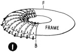
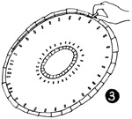
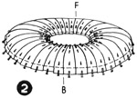
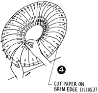
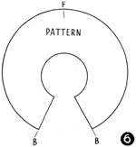
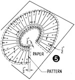

1952—How to Make Hats
by Ruby Carnahan
Making a Pattern of a Rolled Brim Breton Sailor
DESCRIPTION
To cut the material for covering a frame with a rolled or curved brim, make a paper pattern of the brim. To get every detail and curve of frame, use 2" strips of thin paper, and make an exact pattern of brim, then lay the pattern made of paper strips on a piece of paper and cut out pattern in one piece. This method is very satisfactory when working with any curved detail on frame.
MAKING PATTERN OF PAPER STRIPS
(Illus. 1) Start in back of frame on facing side of brim, pin paper strips 2" wide to frame, from brim edge to headsize, pinning papers at brim edge, in center of brim and at headsize. Continue pinning strips around brim, lapping papers slightly on brim edge increasing lapping at headsize to fit frame.
(Illus. 2) When entire facing is covered with paper strips (Illus. 3) draw a line on paper around edge of brim and around head-size.
(Illus. 4) To remove paper pattern made of paper strips from frame, carefully unpin each strip of paper, one at a time from frame around edge of brim, slipping pins back in holes in paper strips, and pinning them together again. Unpin papers on entire brim and around headsize in this manner. When entire pattern has been removed from frame cut off excess paper on brim edge and around headsize on line drawn.
MAKING SECOND PATTERN
(Illus. 5) Place pattern made of strips of paper on a large piece of paper. Be sure pattern is perfectly flat and smooth, then pin pattern to paper and draw a line around brim edge and headsize and each side in back of pattern (Illus. 6). Mark back and front and cut out pattern on line drawn around headsize and brim. Allow 1/2" on brim edge and at headsize when cutting out material.